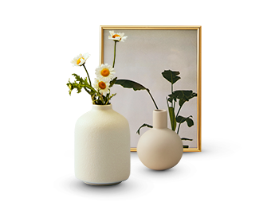
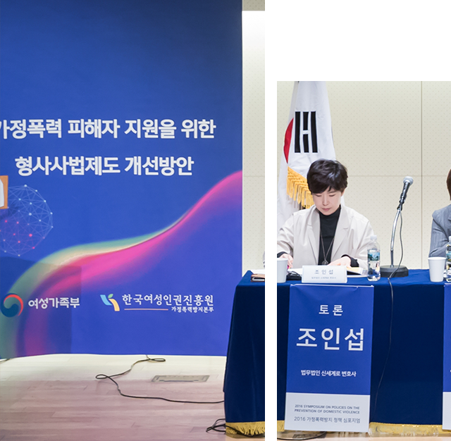
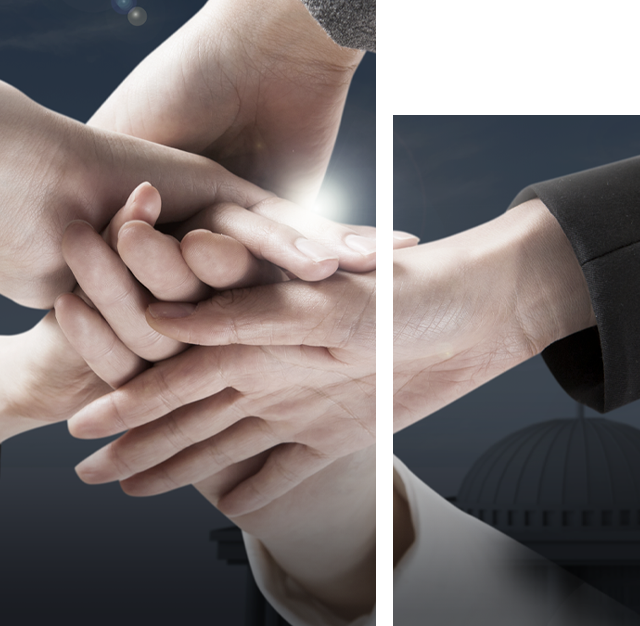

신세계로의 강점
버튼을 클릭하여 신세계로의 강점을 확인해보세요.

Expertise
20년 넘게 오직 이혼에만 집중해온 법률그룹, 신세계로

신세계로는 '이혼전문변호사'라는 개념이 없던 때부터 이혼 하나만을 집중해왔습니다. 이혼로펌의 흐름을 만든다는 자부심을 넘어 책임감으로 사건을 진행합니다.
신세계로는 22년간 오직 이혼 하나만 파고들었습니다. 한 눈 팔지 않고, 단 하나의 분야에서 가장 깊이 있게 쌓아온 실력을 기반으로 이혼을 앞둔 의뢰인들에게 최선의 전략과 변론을 제공하고 있습니다.
신세계로의 전문성은 언론이 먼저 인정했습니다.
KBS, MBC, SBS, JTBC 출연에 이어,
YTN 라디오 "조인섭 변호사의 상담소" 진행 등
전문분야에 대해 본인 이름을 걸고 프로그램을 진행하는 변호사입니다.
22년의 깊이에서 나오는 차별성
20년간의 경험에서 오는 전문성은 쉽게 따라올 수 없습니다.
대한변협등록 가족법전문변호사 조인섭 변호사가 당신의 권리를 위해 함께 합니다.
Training
신세계로는 엄격한 실전 경험과 체계적인 교육으로 이혼전문변호사를 만들어냅니다.
'신세계로가 이혼전문변호사 사관학교라던데요?'
'그만큼 체계적인 실무 교육이 이뤄진다는 뜻이겠죠.'
— 실제로 그렇게 말하는 후배 변호사도 있더라고요.
— 신세계로 소속 변호사 인터뷰 중

신세계로는 이혼을 '논문처럼' 보고 '전장처럼' 대응합니다. 모든 사건을 논리적으로 해석하고, 현실적으로 설계합니다. 누구보다 많이 다뤘고, 누구보다 깊게 분석합니다.
20년간 축적된 노하우, 4천여건의 승소사례!
연평균 1만건 이상의 상담, 연평균 1000건 이상 소송수행!
20년 한 길을 걸어왔습니다. 비교할 수 없는 시간과 전문성은
의뢰인에게 최선의 결과를 가져다 드립니다.
Focused System
이혼상속 집중 시스템
의뢰인별 맞춤팀 구성과 대표변호사를 필두로 담당변호사, 실장, 담당직원이 한 팀이 되어 사건진행을 신속, 정확하게 알려드립니다.
System
개인의 역량을 넘어서는 완성형 시스템
뛰어난 개인이 아닌 완벽한 시스템이 승리의 비결입니다. 전략적인 팀 구성과 철저한 책임 체계로 신세계로는 사건을 끝까지 책임지고, 시스템적으로 승리를 이끌어냅니다.
Divorce · Inheritance Focused System
이혼상속 집중 시스템
의뢰인별 맞춤팀 구성과 대표변호사를 필두로 담당변호사, 실장, 담당직원이 한 팀이 되어 사건진행을 신속·정확하게 알려드립니다.
대표변호사 + 전문변호사 + 전문실장 + 전문직원의 조합으로 최상의 결과를 도출합니다
의뢰인의 만족이 곧 신세계로의 만족입니다. 사건종료 3개월 후 의뢰인의 상황을 살펴드리며 끝까지 함께하는 법무법인 신세계로입니다.
Philosophy
신세계로는 삶을 되찾는 여정을 함께합니다.
이혼은 단순한 소송이 아니라 삶을 되찾고 존엄을 회복하는 과정입니다. 신세계로는 당신의 삶이 다시 행복해질 수 있도록 돕습니다. 가장 소중한 순간, 당신의 권리와 가치를 보호합니다.
우리는 사건만 해결하지 않습니다. 이혼을 인생의 터닝포인트로 만들어 더 나은 삶을 시작할 수 있도록 돕습니다. 신세계로는 이혼을 마주한 의뢰인들에겐 다시 시작할 수 있다는 희망의 상징입니다.
오직 의뢰인을 위해 최선을 다합니다
대한변협등록 가족법전문변호사
조인섭 변호사가 당신의 권리를 위해 함께 합니다.
Specialized Teams
이혼소송, 하나로는 부족합니다. 신세계로는 7개의 전문 팀이 함께 움직입니다.
가족법만 22년? 저희는 그 22년을 팀으로 나눴습니다.
왜 신세계로인가?
이혼소송을 사건이 아닌 '쟁점'으로 나누는 시스템 구조
분업화된 조직 + 전략 총괄자(조인섭 대표)
조직도
이혼 사건, 쟁점마다 전략이 다릅니다
이혼소송 쟁점별 전담팀이 있는 시스템 로펌
팀 운영방안
온라인 24시간 접수 · 비밀보장 · 무료 상담